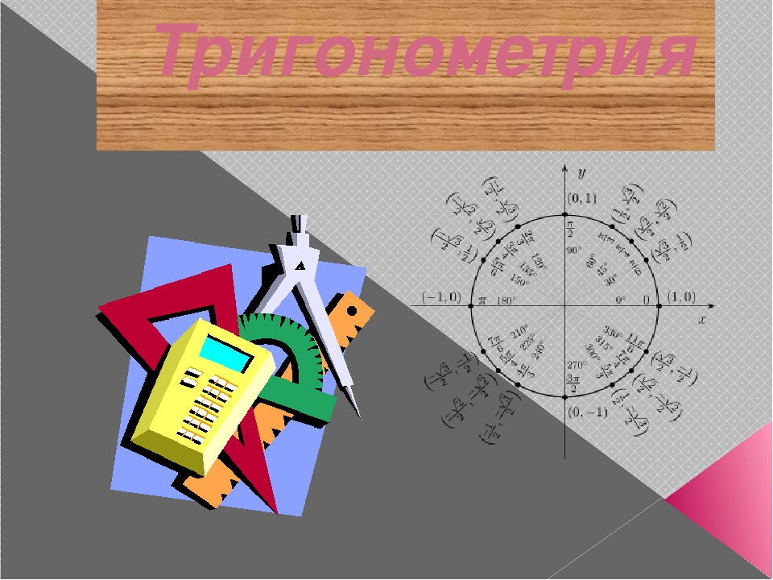

|
|
О насОдним из разделов математики, с которыми школьники справляются с наибольшими трудностями, является тригонометрия. Неудивительно: для того чтобы свободно овладеть этой областью знаний, требуется наличие пространственного мышления, умение находить синусы, косинусы, тангенсы, котангенсы по формулам, упрощать выражения, уметь применять в вычислениях число пи. Данный сайт поможет вам упростить и облегчить изучения данной темы. Создателями сайта являются: Пудин Иван и Хлудов Илья.  |